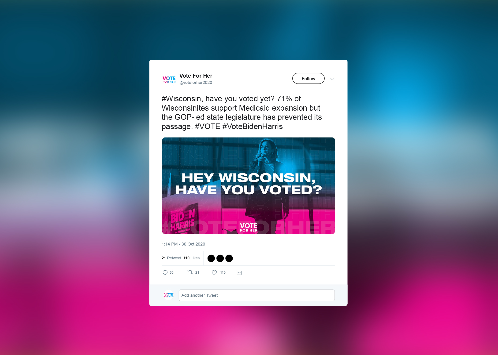
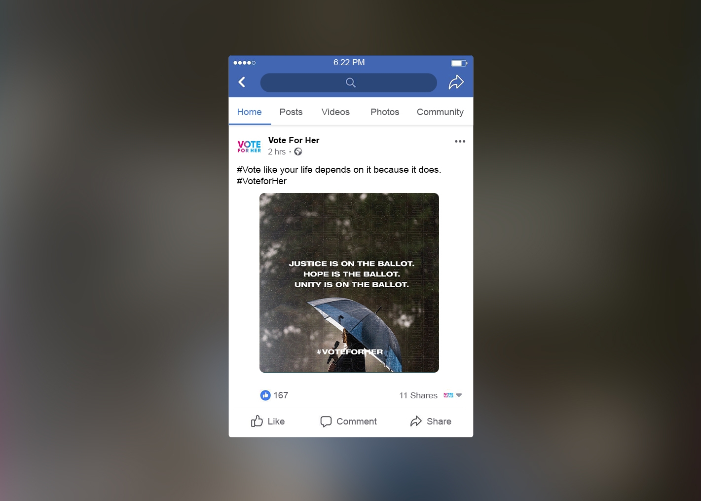

Client
Vote For Her
Tools
Adobe Photoshop
Adobe Premiere
Adobe InDesign
Adobe Illustrator
Categories
Kamala Harris
Social Media
Video
Crisis Communications
The problem: Vote For Her approached SKDK and asked that we elevate Kamala Harris' image to the public. We monitored the media closely with the team to create messaging that was appropriate for any given day.
The solution: As a creative consultant, I worked with one of the art directors at SKDK to develop a few design directions within their existing but underdeveloped brand.
Vote FOr Her wanted to emphasize Kamala Harris' potential historic moment being elected as the first Asian-American and black woman vice president as well as counter any racist or sexist attacks that came her way during the election season. The art director and I first designed a few different brand directions to build from their logo and website designs. The team ultimately gave little input as they liked every direction, so internally we morphed various elements of each direction. We then got to work brainstorming what effective messaging could include. These ranged from creating a series based on the Biden Harris tax plan to putting out voting reminders tailored to each state that we tweeted out on election night. With the increase in mail in voting, we also put out several ads that reminded people of the different deadlines for each state.
We closely followed the news and responded to any attacks on the Biden Harris ticket as well as elevate their general plan. On the vice-presidential debate night, the art director and I were in a war room as the debate happened. I pulled clips of various moments that I felt could be useful to have and saved them the art director was live recording the debate and sending it to me. The next morning, we decided to create a video that compiled all the different times Vice President Pence interrupted the moderator or Harris. The video ended up going viral with over 200,000 views and 2,000 retweets!
 Total interruption count: 43.
— VoteForHer (@voteforher2020) October 8, 2020
Last night, @KamalaHarris spoke for every woman that has had men interrupt or speak over her. She handled those interruptions like a woman who should be our next Vice President.
#imstillspeaking #VoteForHer #WinWithBlackWomen pic.twitter.com/8ohowX8UDR
Need help visually sharing your stories with the world?
Let's be in touch soon!
cgcarter25@gmail.com